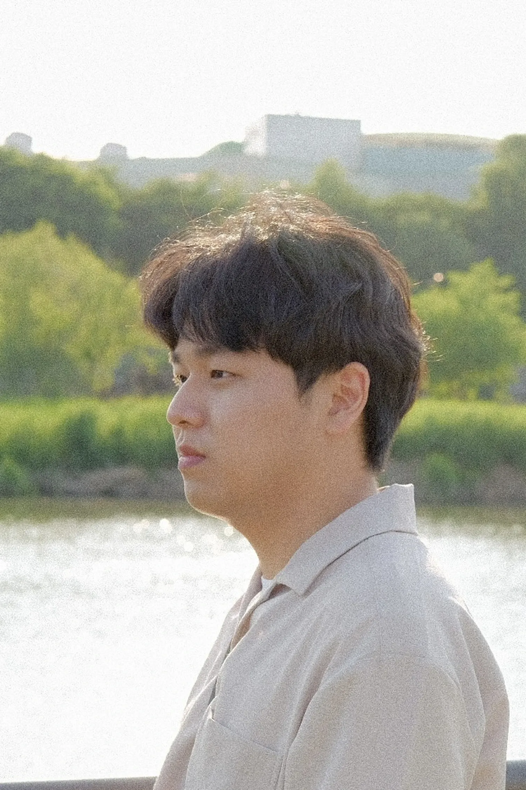

About Me
사진을 통해 순간의 감정과 빛을 기록하는 포토그래퍼 강준혁입니다. 미니멀리즘과 여백의 미를 추구하며, 피사체 본연의 아름다움에 집중하는 작업을 이어가고 있습니다.
인물, 풍경, 동물 등 다양한 장르를 넘나들며, 각기 다른 이야기를 사진에 담아냅니다.
자연광을 활용한 촬영과 섬세한 색감 보정에 강점을 가지고 있습니다.
사진을 통해 순간의 감정과 빛을 기록하는 포토그래퍼 강준혁입니다. 미니멀리즘과 여백의 미를 추구하며, 피사체 본연의 아름다움에 집중하는 작업을 이어가고 있습니다.
인물, 풍경, 동물 등 다양한 장르를 넘나들며, 각기 다른 이야기를 사진에 담아냅니다.
자연광을 활용한 촬영과 섬세한 색감 보정에 강점을 가지고 있습니다.